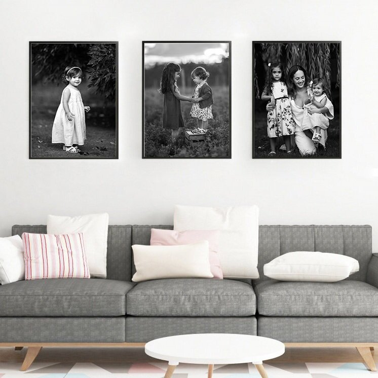
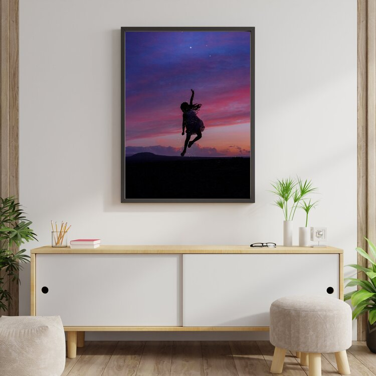

¡Hola!
Soy Griselda, Fotógrafa y diseñadora grafica.
Mi especialidad es la Fotografía Fine Art, donde el objetivo es expresar una idea, un mensaje o una emoción.
La fotografía representa todo un universo de posibilidades, guardados para siempre, en una imagen que será un tesoro para alguien.
Es mi forma de expresarme y de llevar un poco de magia al mundo.
Mis trabajos estan enfocados principalmente en niños y adolescentes. Te invito a conocer lo que hago..
La fotografía Fine Art es un estilo fotográfico que contempla la fotografía como una obra de arte. Este tipo de fotografías tienen un estilo pictórico muy acusado en las que la estética prima por encima de la realidad. La fotografía fine art, por lo tanto, no busca representar la realidad de forma fiel, sino que antepone el resultado estético a la representación fiel de la escena..
Mi sobrina me inspiro a hacer el tipo de fotografía que hago. Comencé a hacerle fotos en situaciones cotidianas, fui encontrando en ella la pasión por la fotografía de niños y en la fotografía onírica.
“Mi misión es hacer visible lo invisible a través del arte y conseguir que un momento dure para siempre”
Juntos podemos contar la historia de tu familia
 "Cada momento es único y mi misión en esta vida es inmortalizarlo para siempre"